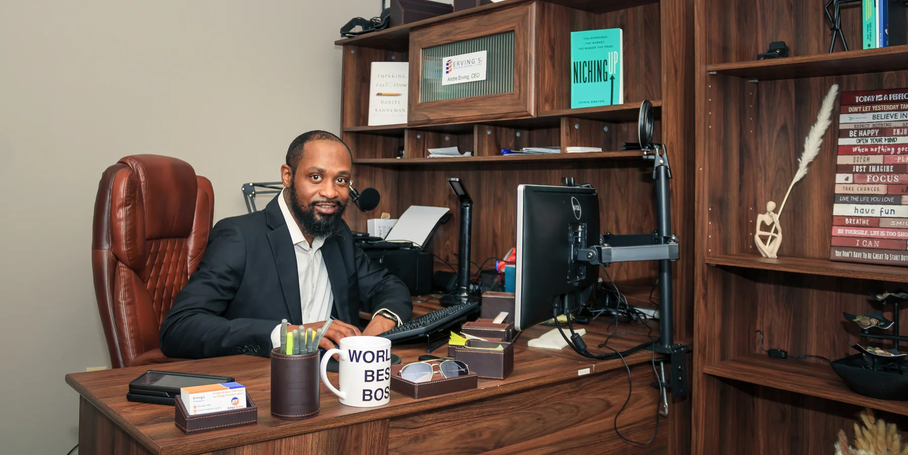

Conversations that move you forward.
Real experiences, practical insights, and meaningful conversations about business, leadership, entrepreneurship, transportation, and personal growth. Listen, learn, and take your next step.

Featured episode
New conversations from The Andre Erving Show appear here as soon as they are published.
Browse podcast episodes
Explore every published episode, listen to the recording, and read the show notes and transcript when available.
Loading episodes…
Real conversations. Useful perspectives.
The Andre Erving Show connects lessons from lived experience, practical education, and the work of building businesses and careers. From freight brokerage and trucking to leadership, resilience and reinvention, each episode is designed to leave you with something worth thinking about—and something useful to apply.
Be part of the conversation
Have a guest suggestion, a topic to explore, or an invitation to collaborate? Share your ideas through the contact page.
Contact the showRise & Thrive
Explore the original podcast archive separately from The Andre Erving Show.